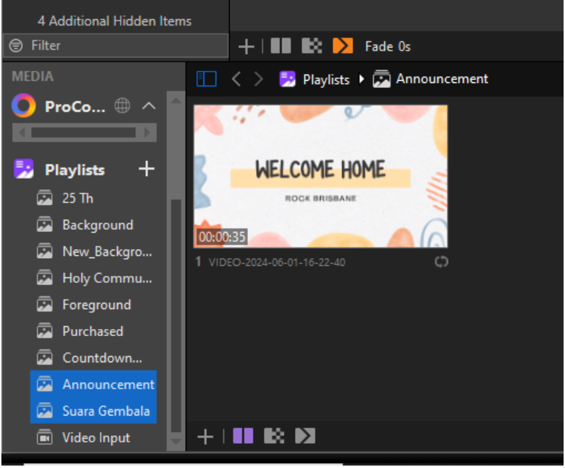
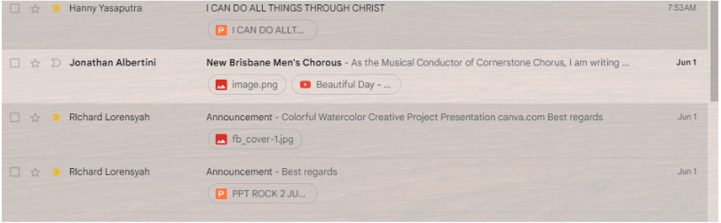
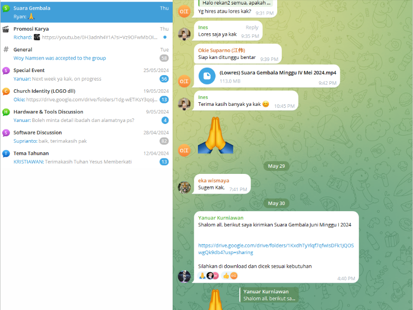
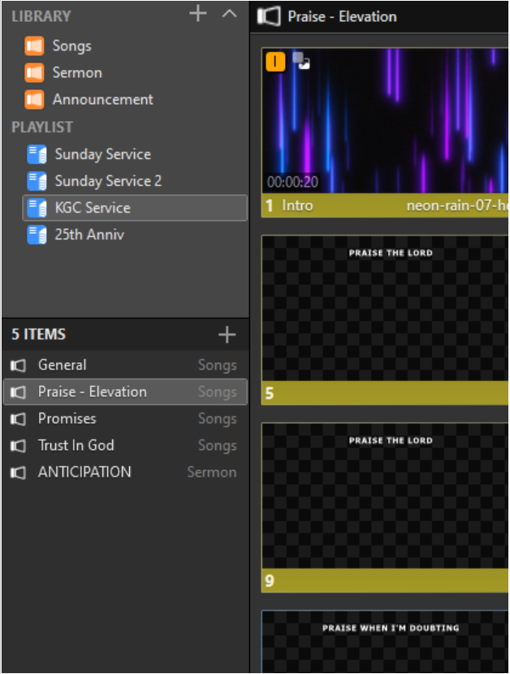
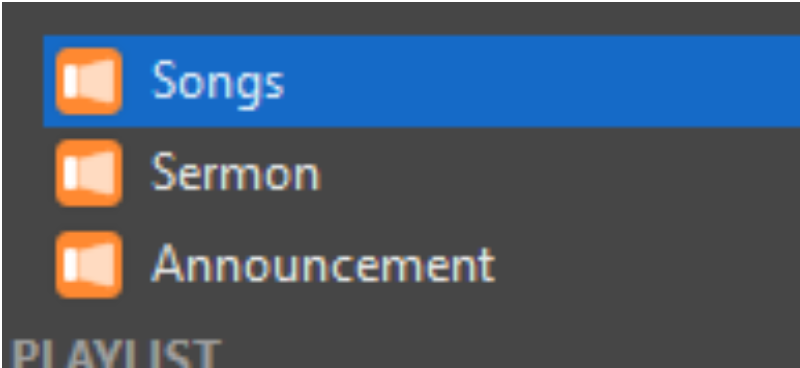
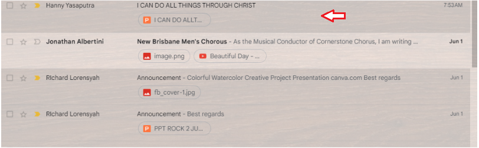

Turn on all devices
Power on every display device before doing anything else. They need a moment to warm up and sync before Pro Presenter can use them.
- Computer (main)
- TV 1 (Left)
- TV 2 (Right)
- TV 3 (Outside)
- Stage screen monitor
Open Pro Presenter
Launch Pro Presenter and wait for it to fully load before continuing. Don't click around while it's loading — let it finish first.
- Pro Presenter is open and fully loaded
- Playlists panel is visible on the left side
- Announcement and Suara Gembala playlists are visible

Check Announcement & Suara Gembala
Before the service, make sure both files are the latest version. Each comes from a different source — check both.
- Downloaded latest Announcement file from Gmail (Richard)
- Updated the Announcement playlist in Pro Presenter

- Opened Telegram and look for GoogleDrive Suara Gembala
- Downloaded video via the Google Drive link
- Updated the Suara Gembala playlist in Pro Presenter

Add songs for KGC Service
Check the song list in the Services App, then load each song into the KGC Service playlist in Pro Presenter. New songs need to be added to the library first.
- Open Services App and note down all songs for this service
- Find each song in the Songs folder in Pro Presenter
- Add all songs to the Sunday Service or KGC Service playlist

- Copy the full song lyrics from Google
- In Pro Presenter, go to: File → Text from Clipboard
- Save it to the Songs folder and update the title
- Adjust the lyric formatting / slide breaks as needed

Add Sermon PPT
Get the sermon PowerPoint from the speaker and import it into Pro Presenter under the Sermon library.
- Download the PPT from Gmail (check for attachment from speaker), OR
- Copy the file directly from the speaker's USB drive

- File imported and library set to Sermon
- All slides appear correctly in the Sermon library
Run the live service and Keyboard SHORTCUTS
You're live — follow the order of service from the Services App. Keep an eye on the worship leader for hand cues during songs.
- Put the Welcome Home slide on screen
- Play Spotify (keep playing during announcements too)
- Confirm order of service in Services App
After service — shut everything down
Once the service is fully over, turn off every device. Do not leave anything running.
- Close Pro Presenter
- Turn off TV 1 (Left)
- Turn off TV 2 (Right)
- Turn off TV 3 (Outside)
- Turn off stage screen monitor
- Shut down computer
- Turn off the power outlet located against the wall
Service complete
All 7 steps done. Well done — see you next Sunday!